R Fundamentals · 2025-08-13
Data Visualisation in R
From Base Graphics to Publication-Quality ggplot2 Figures
"The simple graph has brought more information to the data analyst's mind than any other device." — John W. Tukey (1977), Exploratory Data Analysis
Introduction
Data visualisation is not decoration — it is a primary mode of scientific inference. Well-constructed figures reveal distributional properties, relationships, outliers, and spatial patterns that summary statistics alone cannot convey (Anscombe, 1973; Tufte, 1983).
R is widely regarded as producing the finest statistical graphics of any programming environment. In this page, we explore two complementary approaches:
-
Base R graphics (
graphicspackage): powerful, built-in, requiring no extra packages. -
ggplot2: a principled, layered system based on Leland Wilkinson's Grammar of Graphics (2005), now the dominant tool for publication-quality figures in ecology and the biological sciences.
We will use the Palmer Penguins dataset throughout — the same dataset used in Part 1 and 2 — to maintain consistency and biological interpretability.
References:
- Anscombe, F.J. (1973). Graphs in statistical analysis. The American Statistician, 27(1), 17–21.
- Tufte, E.R. (1983). The Visual Display of Quantitative Information. Graphics Press.
- Wickham, H. (2010). A layered grammar of graphics. Journal of Computational and Graphical Statistics, 19(1), 3–28.
- Wilkinson, L. (2005). The Grammar of Graphics (2nd ed.). Springer.
Setup
We begin every visualisation session by loading our packages and
configuring the display for Jupyter notebooks (Skip
options() chunk if you use RStudio or Base R).
suppressPackageStartupMessages({
library(tidyverse)
library(palmerpenguins)
})
# Configure plot output size for Jupyter / RMarkdown (Skip if using RStudio or Base R)
options(
repr.plot.width = 9,
repr.plot.height = 6,
repr.plot.res = 180
)
# Load and prepare our consistent dataset
data("penguins")
penguins_complete <- penguins |> drop_na()
cat("Dataset: Palmer Penguins\n")
cat("Rows:", nrow(penguins_complete), "| Columns:", ncol(penguins_complete), "\n")
cat("Species:", paste(unique(penguins_complete$species), collapse = ", "), "\n")Output
Dataset: Palmer Penguins Rows: 333 | Columns: 8 Species: Adelie, Gentoo, Chinstrap
Base R Graphics
The graphics package is loaded automatically with R —
no library() call needed. Base R graphics are
imperative: you build a plot by issuing commands
that add to the current graphics device. Each new function call
either starts a new plot or adds elements to the existing one.
Base R is ideal for quick exploratory plots and is sufficient for
many analytical purposes. Understanding it also highlights why
ggplot2 was designed the way it was.
1. Histograms
Histograms display the distribution of a single continuous
variable. Plot histograms using hist().
# A basic histogram of flipper length
hist(penguins_complete$flipper_length_mm,
main = "Distribution of Flipper Length — Palmer Penguins",
xlab = "Flipper Length (mm)",
ylab = "Frequency",
col = "steelblue",
border= "white",
breaks= 25) # approximate number of binsOutput
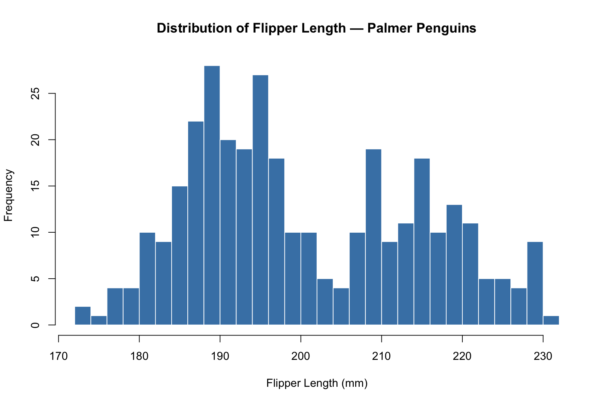
2. Scatter Plots
Scatter plots reveal relationships between two continuous variables.
# Define species-specific colours (a standard palette in penguin research)
species_cols <- c("Adelie" = "darkorange", "Chinstrap" = "purple", "Gentoo" = "cyan4")
# Basic scatter plot
plot(x = penguins_complete$bill_length_mm,
y = penguins_complete$bill_depth_mm,
col = species_cols[penguins_complete$species],
pch = 19, # filled circle
xlab = "Bill Length (mm)",
ylab = "Bill Depth (mm)",
main = "Bill Dimensions by Species — Palmer Penguins")
# Add a legend — this must be called AFTER plot()
legend("topright",
legend = names(species_cols),
col = species_cols,
pch = 19,
title = "Species",
bty = "n") # no box around the legendOutput
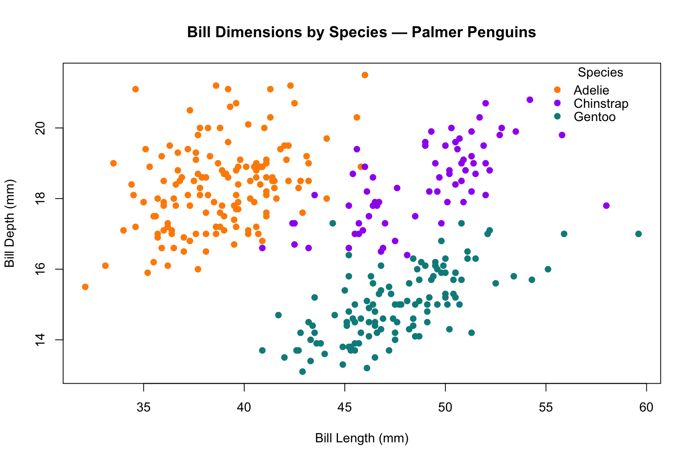
3. Box Plots
Box plots (Tukey, 1977) display the five-number summary (minimum,
Q1, median, Q3, maximum) and are particularly effective for
comparing distributions across groups. Plot boxblots using
boxplot().
# Box plots — formula interface: response ~ group
boxplot(body_mass_g ~ species,
data = penguins_complete,
col = species_cols,
xlab = "Species",
ylab = "Body Mass (g)",
main = "Body Mass Distribution by Species",
notch = TRUE, # notched boxes indicate 95% CI around the median
outline= FALSE) # suppress outlier points (cleaner for teaching)Output
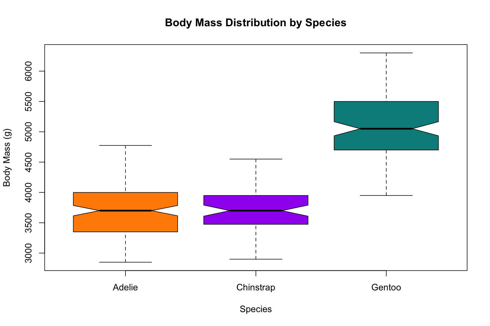
4. Bar Plots
Bar plots summarise a categorical relationship. In base R,
barplot() expects a table or matrix, not raw data.
# Count penguins by species and island
count_table <- table(penguins_complete$species, penguins_complete$island)
# Grouped bar plot
barplot(count_table,
beside = TRUE,
col = species_cols,
xlab = "Island",
ylab = "Count",
main = "Penguin Counts by Island and Species",
legend = rownames(count_table),
args.legend = list(x = "topleft", bty = "n"))Output
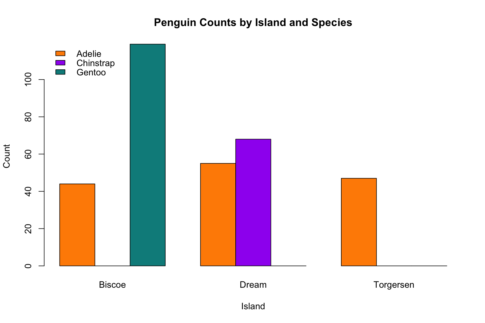
5. Density Plots
# Overlapping density curves — one per species
adelie <- penguins_complete$flipper_length_mm[penguins_complete$species == "Adelie"]
chinstrap <- penguins_complete$flipper_length_mm[penguins_complete$species == "Chinstrap"]
gentoo <- penguins_complete$flipper_length_mm[penguins_complete$species == "Gentoo"]
plot(density(gentoo), col = species_cols["Gentoo"], lwd = 2,
xlim = c(170, 240), ylim = c(0, 0.12),
main = "Flipper Length Density by Species",
xlab = "Flipper Length (mm)", ylab = "Density")
lines(density(adelie), col = species_cols["Adelie"], lwd = 2)
lines(density(chinstrap), col = species_cols["Chinstrap"], lwd = 2)
legend("topleft", legend = names(species_cols),
col = species_cols, lwd = 2, bty = "n")Output
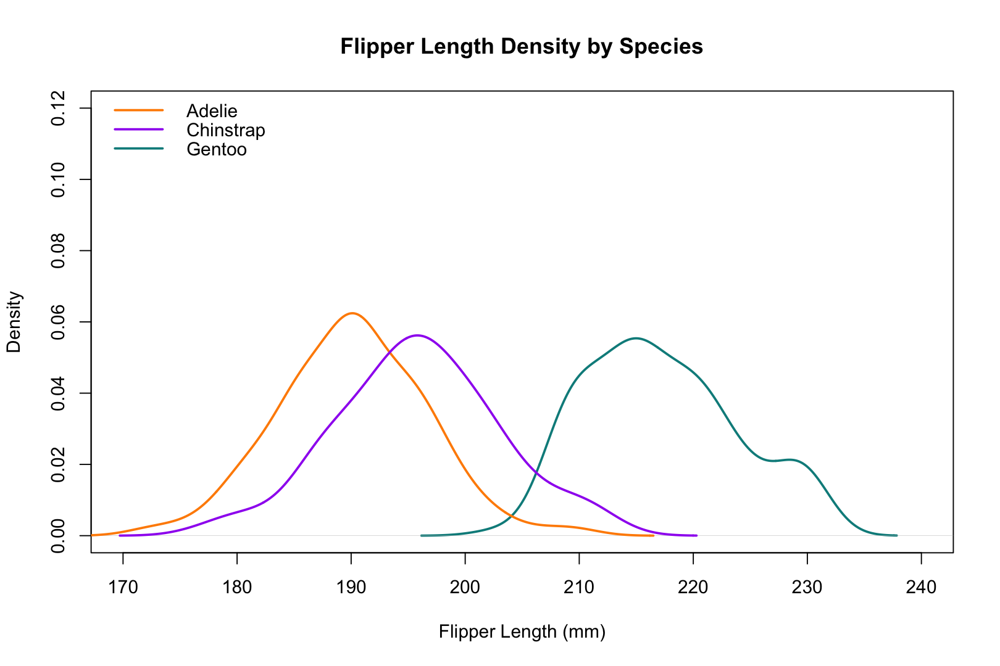
6. Limitations of Base R Graphics
Base R graphics are effective, but they have significant limitations for complex, publication-quality figures:
-
Adding a legend requires a separate
legend()call with manually specified parameters. - Colour mapping (linking colours to data values) must be done manually.
-
Multi-panel figures require
par(mfrow = ...)and careful margin management. - Consistent styling across a document requires repetitive code.
- There is no principled grammar — plots are built procedurally, not declaratively.
ggplot2 was designed to address all of these
limitations.

ggplot2 — A Grammar of Graphics
ggplot2 (Wickham, 2010, 2016) implements
Wilkinson's (2005) Grammar of Graphics — a principled
framework that decomposes every plot into the following
components:
| Component | Description | ggplot2 function |
|---|---|---|
| Data | The dataset being visualised | ggplot(data = ...) |
| Aesthetics | Mappings from data to visual properties | aes(x, y, colour, fill, size, ...) |
| Geometries | The geometric objects that represent data | geom_*() |
| Scales | How data values map to aesthetic values | scale_*() |
| Facets | Splitting the plot into subplots | facet_wrap(), facet_grid() |
| Statistics | Statistical transformations of the data | stat_*() |
| Coordinates | The coordinate system | coord_*() |
| Theme | Non-data visual elements | theme() |
Three rules govern every ggplot2 plot:
- Plots are built by accumulation: start with a base and add layers.
-
Aesthetics are data-driven or constant — never both: if it varies with data, it belongs inside
aes(); if it is fixed, it belongs outside. -
Grouping is identity: it tells
ggplot2which observations belong together across layers.
References:
- Wickham, H. (2016). ggplot2: Elegant Graphics for Data Analysis (2nd ed.). Springer. https://ggplot2-book.org
- Wilkinson, L. (2005). The Grammar of Graphics (2nd ed.). Springer.
Building a Plot — One Layer at a Time
The most important pedagogical principle in learning
ggplot2 is that every layer you add incrementally
improves the figure. A figure is never finished in one call — it
is refined through successive additions.
Let us build a complete figure from scratch, adding exactly one element per step.
# Step 1: An empty canvas
# ggplot() initialises the plot — it defines the data and global aesthetics
# but produces nothing visible yet.
ggplot(data = penguins_complete,
mapping = aes(x = bill_length_mm,
y = bill_depth_mm))Output
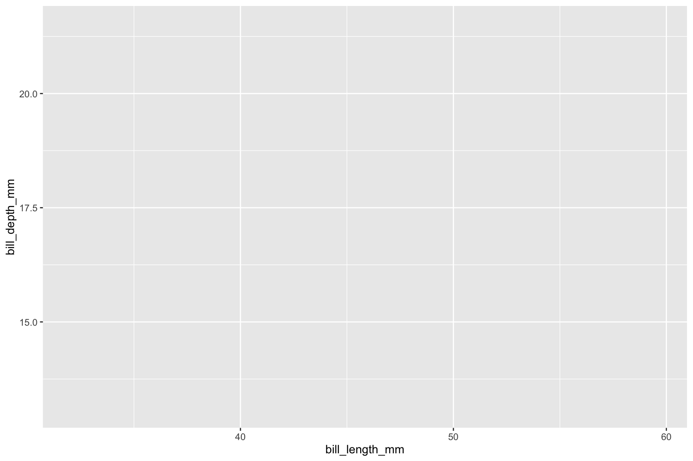
# Step 2: Add a geometry (+ geom_point)
# geom_point() adds a scatter plot layer
# Note: all layers are connected with the + operator
ggplot(data = penguins_complete,
mapping = aes(x = bill_length_mm,
y = bill_depth_mm)) +
geom_point()Output
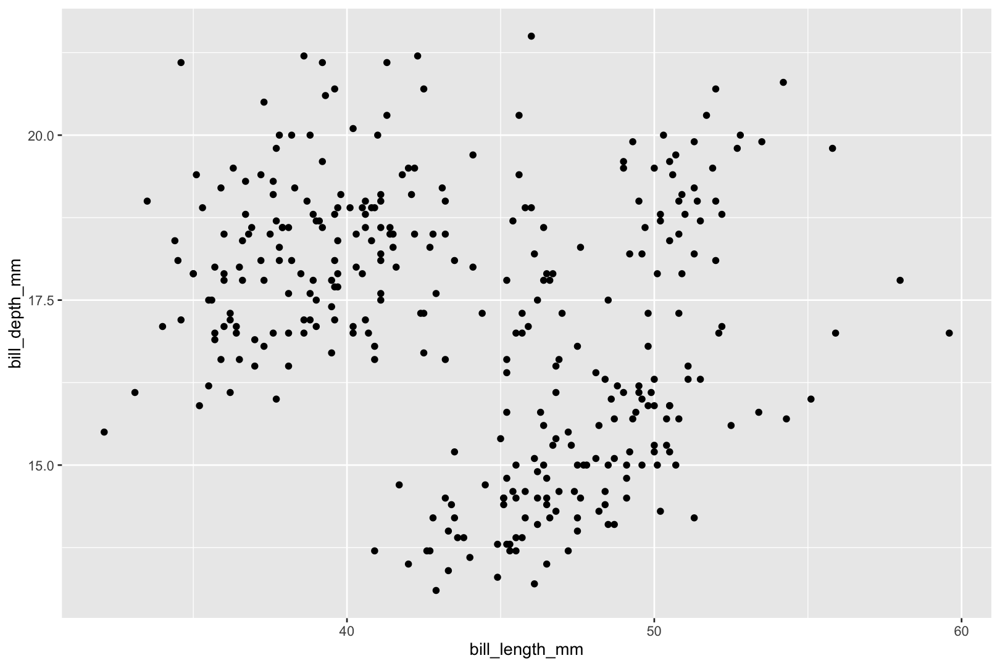
# Step 3: Map colour to species (+ colour = species inside aes)
# Moving colour INTO aes() links it to data — ggplot2 assigns colours automatically
# and creates a legend without any additional code
ggplot(data = penguins_complete,
mapping = aes(x = bill_length_mm,
y = bill_depth_mm,
colour = species)) +
geom_point()Output
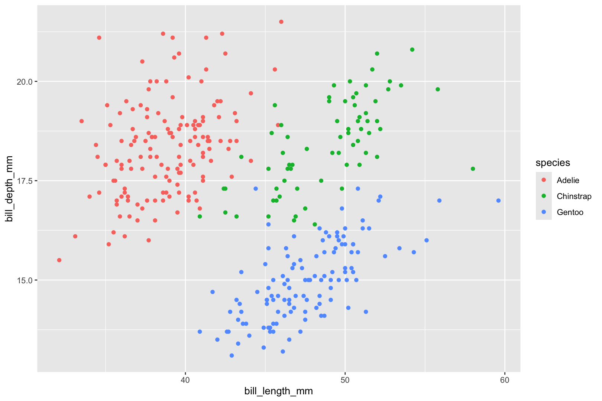
# Step 4: Add axis labels and a title (+ labs)
# labs() modifies all text labels — axes, legend, title, subtitle, caption
ggplot(data = penguins_complete,
mapping = aes(x = bill_length_mm,
y = bill_depth_mm,
colour = species)) +
geom_point() +
labs(x = "Bill Length (mm)",
y = "Bill Depth (mm)",
colour = "Species",
title = "Bill Dimensions of Palmer Penguins")Output
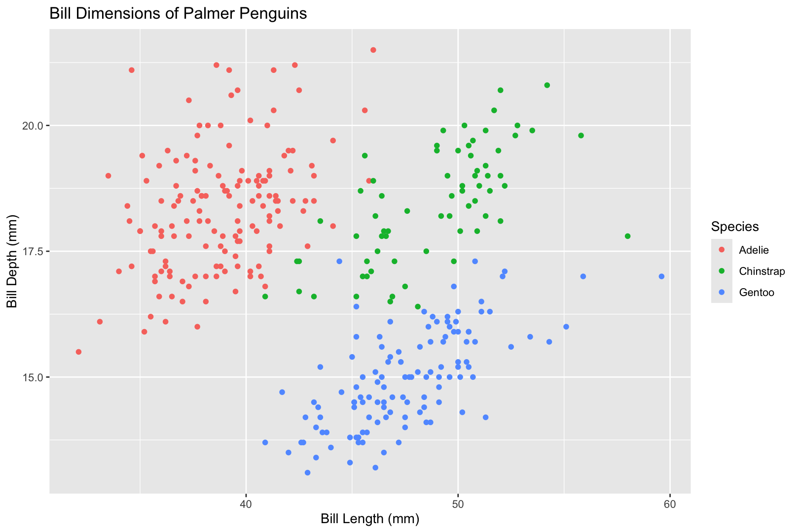
# Step 5: Apply a clean theme (+ theme_classic)
# theme_classic() removes the grey background and uses a clean axis-line style
# Other options: theme_bw(), theme_minimal(), theme_light()
ggplot(data = penguins_complete,
mapping = aes(x = bill_length_mm,
y = bill_depth_mm,
colour = species)) +
geom_point() +
labs(x = "Bill Length (mm)",
y = "Bill Depth (mm)",
colour = "Species",
title = "Bill Dimensions of Palmer Penguins") +
theme_classic()Output
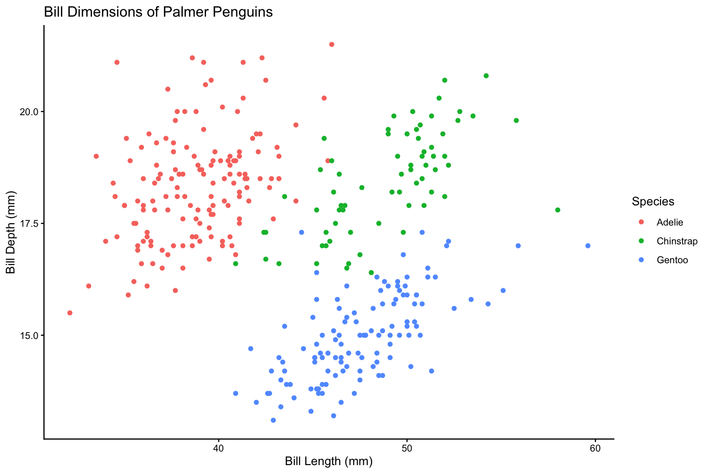
# Step 6: Use ecologically meaningful colours (+ scale_colour_manual)
# Replace the default palette with the published penguin colour scheme
ggplot(data = penguins_complete,
mapping = aes(x = bill_length_mm,
y = bill_depth_mm,
colour = species)) +
geom_point() +
scale_colour_manual(values = c("darkorange", "purple", "cyan4")) +
labs(x = "Bill Length (mm)",
y = "Bill Depth (mm)",
colour = "Species",
title = "Bill Dimensions of Palmer Penguins") +
theme_classic()Output
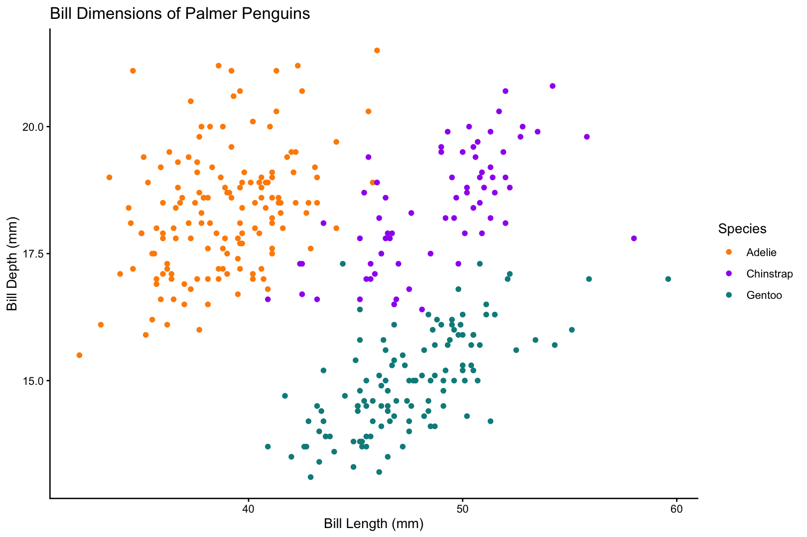
# Step 7: Add shape mapping for accessibility (+ shape = species inside aes)
# Using both colour and shape improves legibility in greyscale printing
# and for readers with colour vision deficiency
ggplot(data = penguins_complete,
mapping = aes(x = bill_length_mm,
y = bill_depth_mm,
colour = species,
shape = species)) +
geom_point(size = 2, alpha = 0.8) +
scale_colour_manual(values = c("darkorange", "purple", "cyan4")) +
labs(x = "Bill Length (mm)",
y = "Bill Depth (mm)",
colour = "Species",
shape = "Species",
title = "Bill Dimensions of Palmer Penguins",
subtitle = "Bill length and depth (mm) for Adelie, Chinstrap, and Gentoo penguins",
caption = "Data: Gorman et al. (2014); Horst, Hill & Gorman (2020)") +
theme_classic()Output
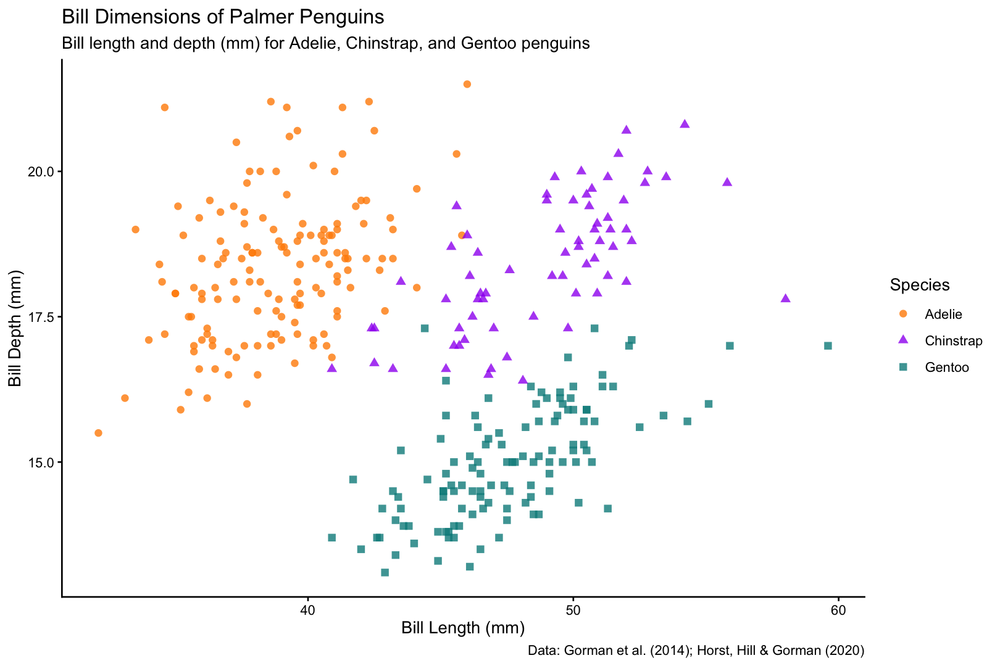
# Step 8: Add a linear trend line per species (+ geom_smooth)
# geom_smooth inherits the colour and shape aesthetics from ggplot()
ggplot(data = penguins_complete,
mapping = aes(x = bill_length_mm,
y = bill_depth_mm,
colour = species,
shape = species)) +
geom_point(size = 2, alpha = 0.8) +
geom_smooth(method = "lm", se = TRUE, alpha = 0.2) +
scale_colour_manual(values = c("darkorange", "purple", "cyan4")) +
labs(x = "Bill Length (mm)",
y = "Bill Depth (mm)",
colour = "Species",
shape = "Species",
title = "Bill Dimensions of Palmer Penguins",
subtitle = "Linear fits with 95% confidence intervals",
caption = "Data: Gorman et al. (2014); Horst, Hill & Gorman (2020)") +
theme_classic()Output
`geom_smooth()` using formula = 'y ~ x'
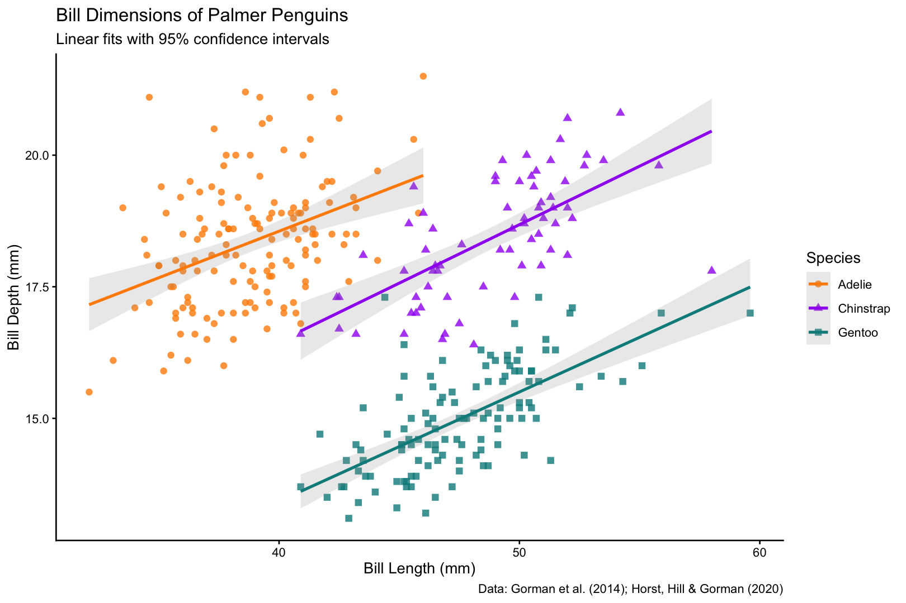
What we have shown
Each + line added exactly
one feature:
ggplot()— canvasgeom_point()— data points-
colour = speciesinsideaes()— colour mapping labs()— axis and title labelstheme_classic()— clean stylingscale_colour_manual()— custom colours-
shape = species+alpha— shape mapping geom_smooth()— trend lines
This is the grammar of graphics in action: layers stack to compose complex figures from simple parts.
Common Geometry Types
ggplot2 provides over 40
geom_* functions. Here are the most common in
ecological research.
# Histogram
ggplot(penguins_complete, aes(x = flipper_length_mm, fill = species)) +
geom_histogram(bins = 30, alpha = 0.7, position = "identity") +
scale_fill_manual(values = c("darkorange", "purple", "cyan4")) +
labs(x = "Flipper Length (mm)", y = "Count", fill = "Species",
title = "Distribution of Flipper Length") +
theme_classic()Output
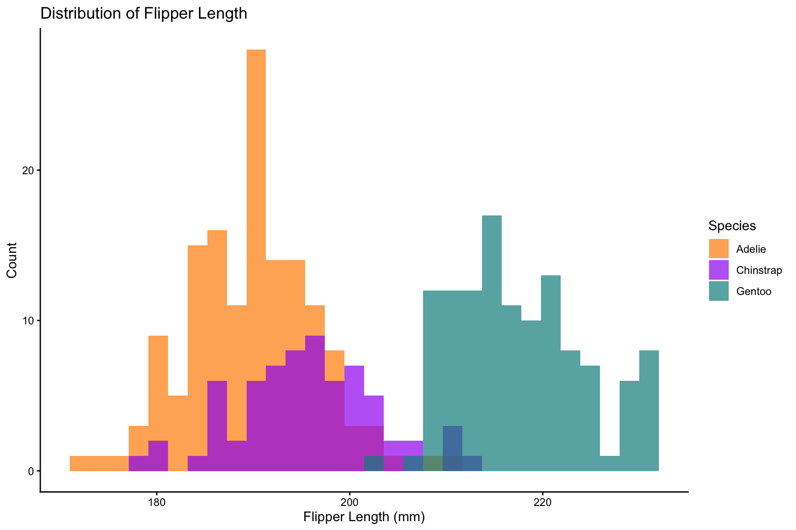
# Density plot
ggplot(penguins_complete, aes(x = flipper_length_mm, fill = species)) +
geom_density(alpha = 0.5) +
scale_fill_manual(values = c("darkorange", "purple", "cyan4")) +
labs(x = "Flipper Length (mm)", y = "Density", fill = "Species",
title = "Density of Flipper Length by Species") +
theme_classic()Output
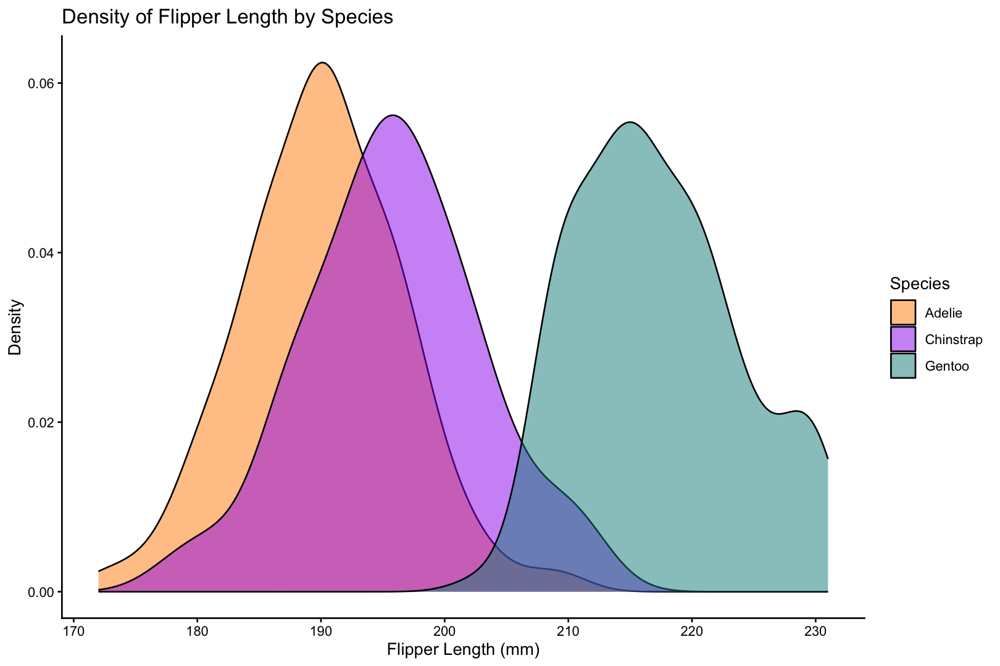
# Box plot
ggplot(penguins_complete, aes(x = species, y = body_mass_g, fill = species)) +
geom_boxplot(alpha = 0.7, outlier.shape = 21, outlier.size = 2) +
scale_fill_manual(values = c("darkorange", "purple", "cyan4")) +
labs(x = "Species", y = "Body Mass (g)", fill = "Species",
title = "Body Mass by Species") +
theme_classic() +
theme(legend.position = "none") # legend redundant when x = groupOutput
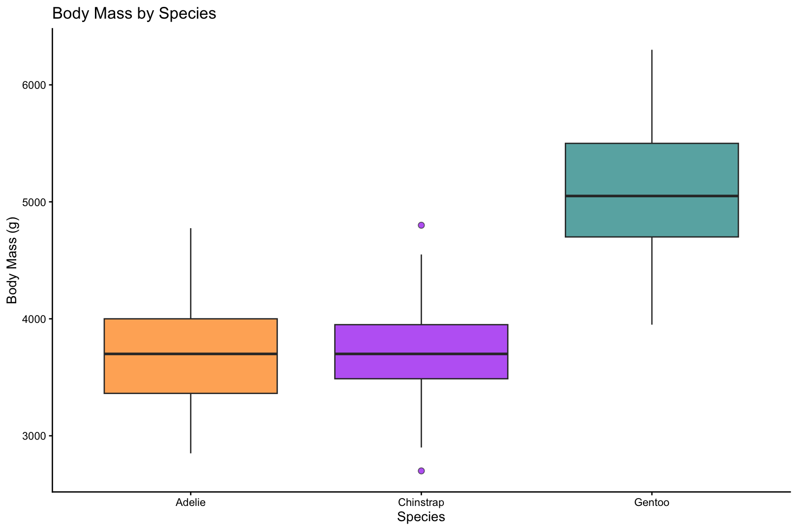
# Violin plot — shows the full distribution shape
ggplot(penguins_complete, aes(x = species, y = body_mass_g, fill = species)) +
geom_violin(alpha = 0.7, trim = FALSE) +
geom_boxplot(width = 0.08, fill = "white", alpha = 0.8) + # embedded boxplot
scale_fill_manual(values = c("darkorange", "purple", "cyan4")) +
labs(x = "Species", y = "Body Mass (g)", fill = "Species",
title = "Body Mass Distribution (Violin + Boxplot)") +
theme_classic() +
theme(legend.position = "none")Output
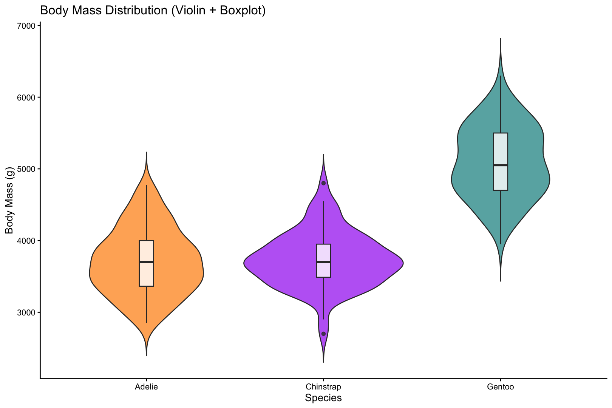
# Bar chart — summarised counts with geom_bar
ggplot(penguins_complete, aes(x = island, fill = species)) +
geom_bar(position = "dodge") +
scale_fill_manual(values = c("darkorange", "purple", "cyan4")) +
labs(x = "Island", y = "Count", fill = "Species",
title = "Penguin Abundance by Island and Species") +
theme_classic()Output
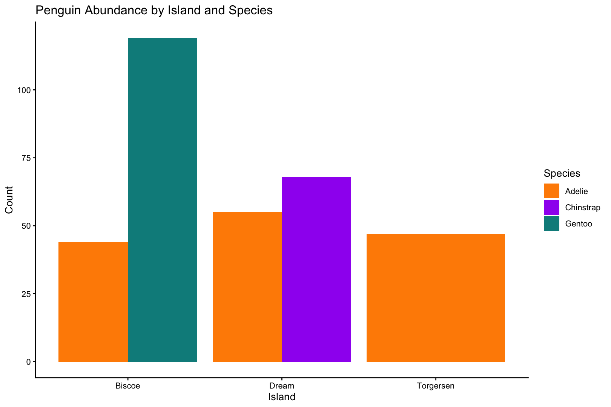
Faceting — Small Multiples
Faceting splits a plot into a grid of sub-plots, one per level of a variable. It is one of the most powerful tools in ggplot2 for revealing structure in ecological data.
"Comparisons within small multiples are better than comparisons between separate charts." — Tufte (1983)
# facet_wrap() — wraps panels into a grid automatically
ggplot(penguins_complete, aes(x = bill_length_mm, y = body_mass_g,
colour = sex)) +
geom_point(size = 2, alpha = 0.8) +
facet_wrap(~ species, nrow = 1) +
scale_colour_manual(values = c("female" = "coral", "male" = "steelblue")) +
labs(x = "Bill Length (mm)", y = "Body Mass (g)",
colour = "Sex",
title = "Bill Length vs Body Mass by Species and Sex") +
theme_classic() +
theme(strip.background = element_rect(fill = "grey90"),
strip.text = element_text(face = "bold"))Output
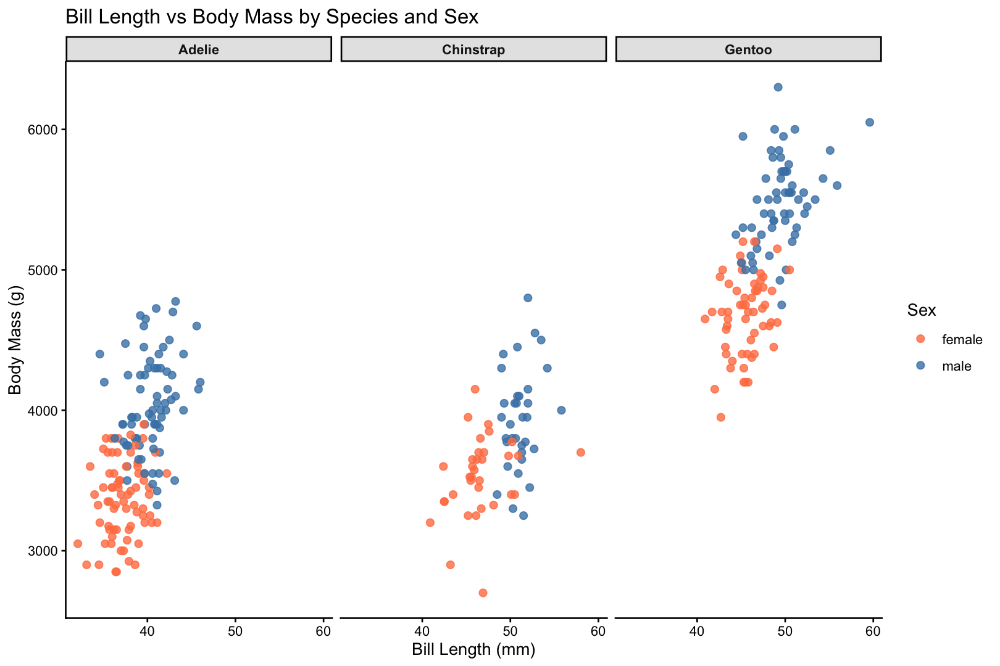
# facet_grid() — rows AND columns of grouping
ggplot(penguins_complete, aes(x = flipper_length_mm, fill = species)) +
geom_density(alpha = 0.6) +
facet_grid(sex ~ species) +
scale_fill_manual(values = c("darkorange", "purple", "cyan4")) +
labs(x = "Flipper Length (mm)", y = "Density",
title = "Flipper Length Density — Faceted by Species × Sex") +
theme_minimal() +
theme(legend.position = "none",
strip.text = element_text(face = "bold"))Output
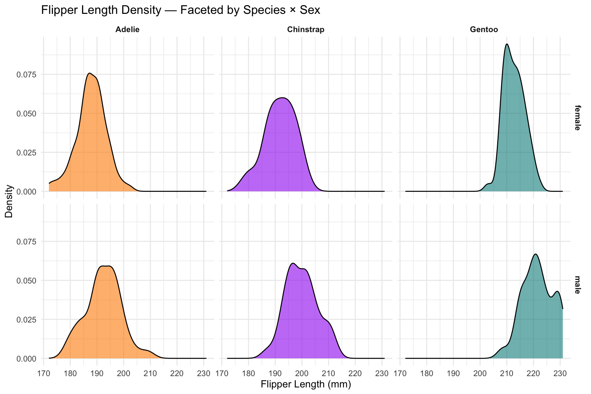
Scales
Scales control the mapping between data values
and visual properties. Every aesthetic has a corresponding
scale_*() function.
# Colour scales — viridis is perceptually uniform and colourblind-safe
# install.packages("viridis")
library(viridis)
ggplot(penguins_complete, aes(x = bill_length_mm, y = bill_depth_mm,
colour = body_mass_g)) +
geom_point(size = 3, alpha = 0.8) +
scale_colour_viridis_c(option = "plasma", name = "Body Mass (g)") +
labs(x = "Bill Length (mm)", y = "Bill Depth (mm)",
title = "Bill Dimensions Coloured by Body Mass",
subtitle = "Viridis colour scale — perceptually uniform, colourblind-safe") +
theme_classic()Output
Loading required package: viridisLite
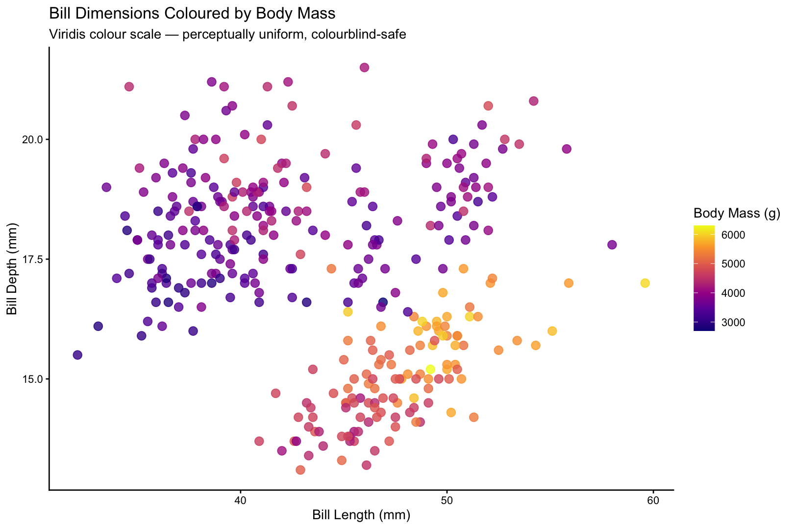
# Axis scales — log transform, breaks, limits
ggplot(penguins_complete, aes(x = bill_length_mm, y = body_mass_g,
colour = species, shape = species)) +
geom_point(size = 2, alpha = 0.8) +
scale_y_log10(labels = scales::comma) + # log10 y-axis
scale_x_continuous(breaks = seq(30, 60, by = 5)) +
scale_colour_manual(values = c("darkorange", "purple", "cyan4")) +
labs(x = "Bill Length (mm)", y = "Body Mass (g, log scale)",
colour = "Species", shape = "Species",
title = "Bill Length vs Body Mass (log-transformed y-axis)") +
theme_classic()Output
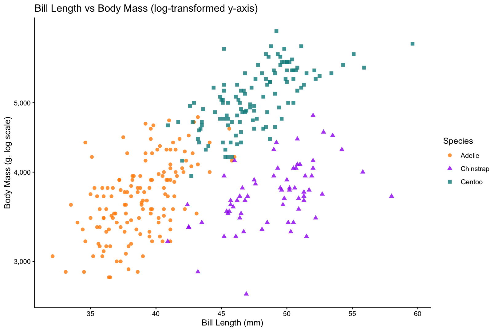
Themes — Fine-Tuning Appearance
theme() controls every non-data visual element: text
size, font, axis lines, grid, margins, and more.
ggplot2 includes several preset themes; you can also
build a custom theme.
# Comparing preset themes on the same plot
base_plot <- ggplot(penguins_complete,
aes(x = flipper_length_mm, y = body_mass_g,
colour = species)) +
geom_point(size = 2, alpha = 0.8) +
scale_colour_manual(values = c("darkorange", "purple", "cyan4")) +
labs(x = "Flipper Length (mm)", y = "Body Mass (g)",
colour = "Species")
base_plot + theme_classic() + labs(title = "theme_classic()")Output
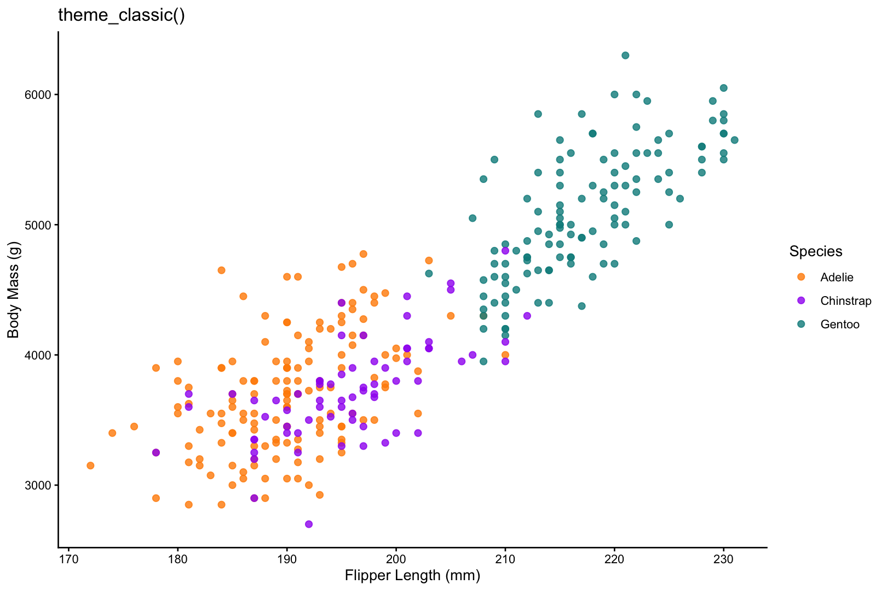
base_plot + theme_bw() + labs(title = "theme_bw()")Output
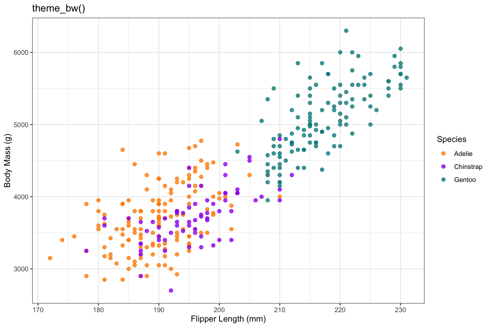
base_plot + theme_minimal() + labs(title = "theme_minimal()")Output
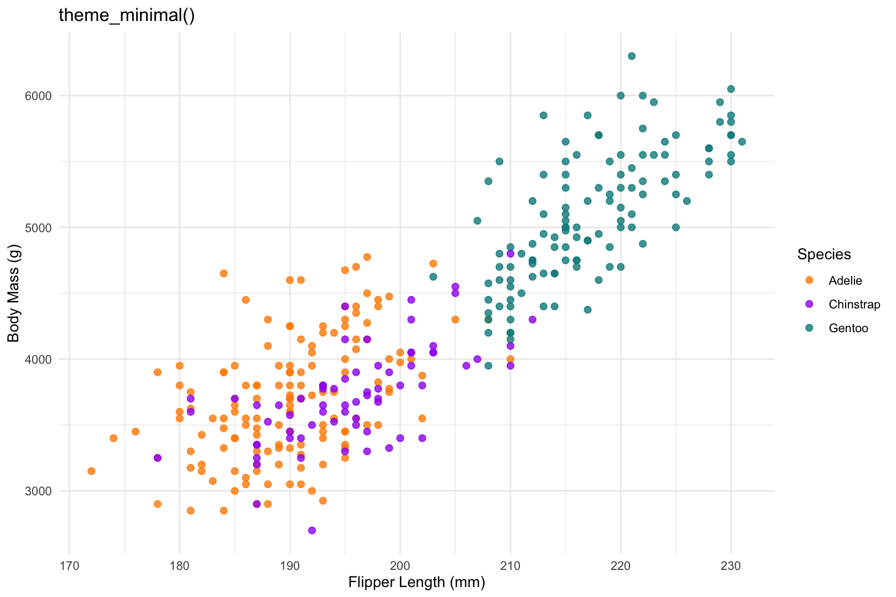
# Custom theme modifications with theme()
ggplot(penguins_complete,
aes(x = species, y = body_mass_g, fill = species)) +
geom_boxplot(alpha = 0.8) +
scale_fill_manual(values = c("darkorange", "purple", "cyan4")) +
labs(x = NULL, y = "Body Mass (g)",
title = "Body Mass by Species",
subtitle = "Palmer Penguins LTER dataset",
caption = "Gorman et al. (2014)") +
theme_classic() +
theme(
# Title formatting
plot.title = element_text(size = 14, face = "bold", hjust = 0.5),
plot.subtitle = element_text(size = 10, colour = "grey50", hjust = 0.5),
plot.caption = element_text(size = 8, colour = "grey60"),
# Axis text
axis.title.y = element_text(size = 11, face = "bold"),
axis.text = element_text(size = 10),
# Legend
legend.position = "none", # remove redundant legend
# Background
plot.background = element_rect(fill = "white", colour = NA),
panel.background = element_rect(fill = "grey98", colour = NA)
)Output
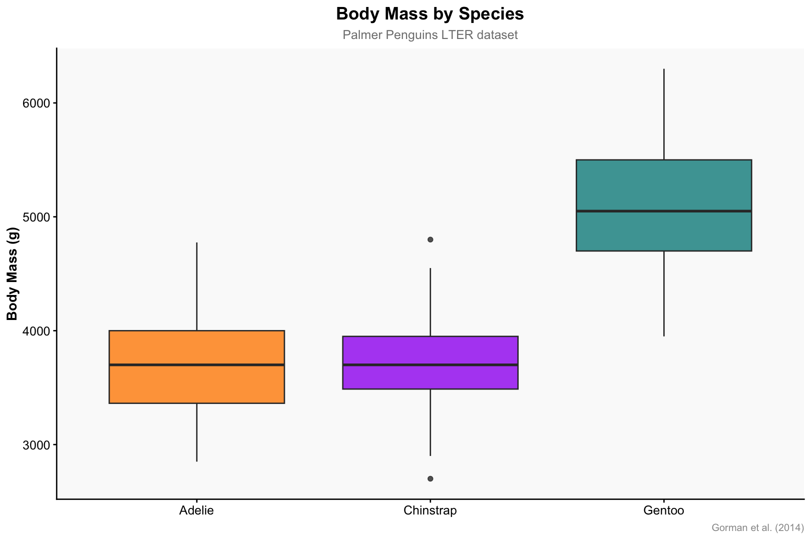
Annotations and Labels
Effective scientific figures label key features directly, reducing the cognitive load of consulting a legend.
library(ggrepel) # install.packages("ggrepel") — non-overlapping text labels
# Compute species centroids for labelling
species_centroids <- penguins_complete |>
group_by(species) |>
summarise(
bill_length_mm = mean(bill_length_mm),
bill_depth_mm = mean(bill_depth_mm)
)
ggplot(penguins_complete,
aes(x = bill_length_mm, y = bill_depth_mm, colour = species)) +
geom_point(size = 2, alpha = 0.5) +
geom_label_repel(
data = species_centroids,
aes(label = species),
size = 4,
fontface= "bold",
box.padding = 1,
show.legend = FALSE
) +
scale_colour_manual(values = c("darkorange", "purple", "cyan4")) +
labs(x = "Bill Length (mm)", y = "Bill Depth (mm)",
title = "Bill Dimensions — Species Labelled at Centroids") +
theme_classic() +
theme(legend.position = "none")Output
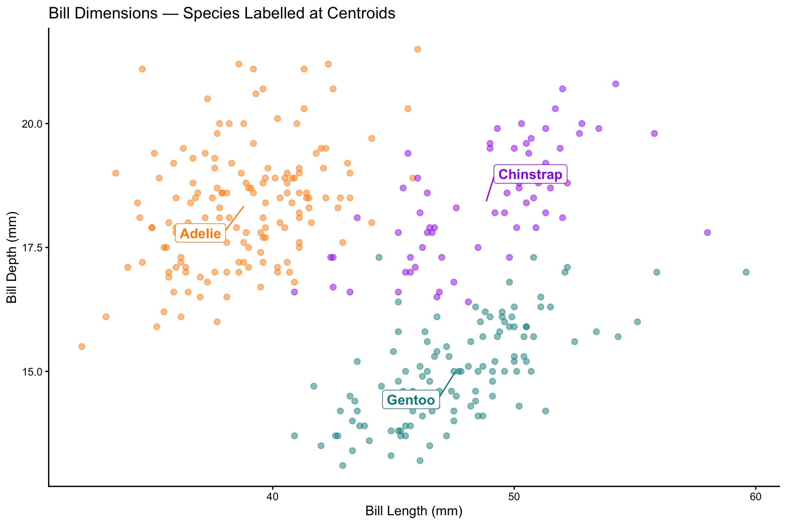
# Annotate with geom_text — note the Simpson's Paradox!
# The overall trend is negative, but within species it is positive
ggplot(penguins_complete,
aes(x = bill_length_mm, y = bill_depth_mm)) +
geom_point(aes(colour = species), size = 2, alpha = 0.6) +
geom_smooth(method = "lm", colour = "black", linetype = "dashed",
se = FALSE) + # overall trend (misleading without grouping)
geom_smooth(aes(colour = species), method = "lm",
se = FALSE) + # within-species trends
scale_colour_manual(values = c("darkorange", "purple", "cyan4")) +
annotate("text", x = 35, y = 21.5,
label = "Overall trend →\n(Simpson's Paradox)",
colour = "black", size = 3.5, hjust = 0) +
labs(x = "Bill Length (mm)", y = "Bill Depth (mm)",
colour = "Species",
title = "Simpson's Paradox in Penguin Bill Dimensions",
subtitle = "The negative overall trend reverses within each species") +
theme_classic()Output
`geom_smooth()` using formula = 'y ~ x' `geom_smooth()` using formula = 'y ~ x'
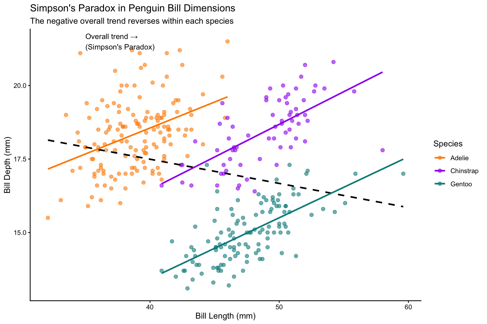
Combining Plots with patchwork
patchwork (Pedersen, 2024) provides an elegant syntax
for arranging multiple ggplot2 objects into a single
figure — essential for multi-panel publication figures.
# install.packages("patchwork")
library(patchwork)
# Create component plots
p1 <- ggplot(penguins_complete, aes(x = species, y = body_mass_g, fill = species)) +
geom_boxplot(alpha = 0.8) +
scale_fill_manual(values = c("darkorange", "purple", "cyan4")) +
labs(x = NULL, y = "Body Mass (g)", title = "A. Body mass by species") +
theme_classic() + theme(legend.position = "none")
p2 <- ggplot(penguins_complete, aes(x = flipper_length_mm, y = body_mass_g,
colour = species)) +
geom_point(size = 2, alpha = 0.7) +
geom_smooth(method = "lm", se = FALSE) +
scale_colour_manual(values = c("darkorange", "purple", "cyan4")) +
labs(x = "Flipper Length (mm)", y = "Body Mass (g)",
colour = "Species", title = "B. Flipper length vs body mass") +
theme_classic()
p3 <- ggplot(penguins_complete, aes(x = bill_length_mm, fill = species)) +
geom_density(alpha = 0.6) +
scale_fill_manual(values = c("darkorange", "purple", "cyan4")) +
labs(x = "Bill Length (mm)", y = "Density",
fill = "Species", title = "C. Bill length distribution") +
theme_classic()
# Arrange: p1 top-left, p2 top-right, p3 full width below
(p1 | p2) / p3 +
plot_annotation(
title = "Morphological Variation in Palmer Archipelago Penguins",
subtitle = "Three species sampled 2007–2009 (n = 333)",
caption = "Data: Gorman et al. (2014); Horst, Hill & Gorman (2020)",
theme = theme(plot.title = element_text(size = 14, face = "bold"))
)Output
`geom_smooth()` using formula = 'y ~ x'
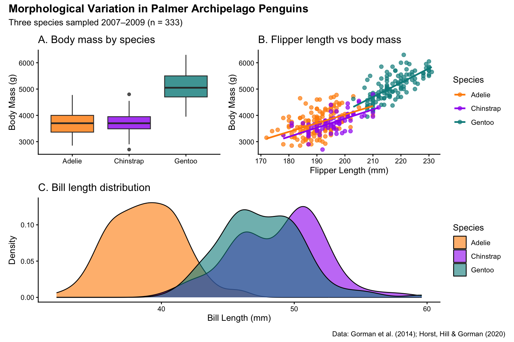
Saving Figures
ggsave() saves the most recently rendered
ggplot2 figure (or a named plot object) to disk.
# Best practice: save as an object first, then export
final_figure <- ggplot(penguins_complete,
aes(x = bill_length_mm, y = bill_depth_mm,
colour = species, shape = species)) +
geom_point(size = 2.5, alpha = 0.8) +
geom_smooth(method = "lm", se = TRUE, alpha = 0.15) +
scale_colour_manual(values = c("darkorange", "purple", "cyan4")) +
scale_shape_manual(values = c(16, 17, 15)) +
labs(x = "Bill Length (mm)",
y = "Bill Depth (mm)",
colour = "Species",
shape = "Species",
title = "Bill Dimensions of Palmer Penguins",
subtitle= "Linear fits with 95% confidence intervals",
caption = "Data: Gorman et al. (2014); Horst, Hill & Gorman (2020)") +
theme_classic() +
theme(plot.title = element_text(face = "bold"),
legend.position = c(0.15, 0.80),
legend.background = element_rect(fill = "white", colour = "grey80"))
# Save — PNG for sharing/web, PDF or SVG for publication (vector formats)
# ggsave("outputs/penguin_bill_dimensions.png",
# final_figure, width = 9, height = 6, dpi = 300)
# ggsave("outputs/penguin_bill_dimensions.pdf",
# final_figure, width = 9, height = 6)
print(final_figure)Raincloud Plots — Advanced Visualisation
A raincloud plot combines three views into one figure: the raw data points (the "rain"), a distribution estimate (the "cloud"), and a summary boxplot. Proposed by Allen et al. (2019) as a best-practice alternative to bar charts for showing full distributional data.
We use ggdist (Kay, 2024) for the distribution
components.
Reference: Allen, M., Poggiali, D., Whitaker, K., Marshall, T.R. & Kievit, R.A. (2019). Raincloud plots: a multi-platform tool for robust data visualization. Wellcome Open Research, 4, 63. https://doi.org/10.12688/wellcomeopenres.15191.1
# install.packages("ggdist")
library(ggdist)
ggplot(penguins_complete,
aes(x = species, y = body_mass_g, fill = species, colour = species)) +
# 1. The "cloud": half-eye (density curve)
stat_halfeye(
adjust = 0.6,
width = 0.4,
justification = -0.25,
.width = 0,
point_colour = NA
) +
# 2. The boxplot (compact summary)
geom_boxplot(
width = 0.1,
outlier.shape = NA,
fill = "white",
alpha = 0.8,
colour = "grey30"
) +
# 3. The "rain": jittered raw data
geom_point(
position = position_jitter(seed = 42, width = 0.08),
size = 1.5,
alpha = 0.4
) +
# Flip for readability
coord_flip() +
scale_fill_manual(values = c("darkorange", "purple", "cyan4")) +
scale_colour_manual(values = c("darkorange", "purple", "cyan4")) +
labs(x = NULL, y = "Body Mass (g)",
title = "Body Mass Distribution — Palmer Penguins",
subtitle = "Raincloud plot: raw data + boxplot + density estimate",
caption = "Allen et al. (2019) | Data: Gorman et al. (2014)") +
theme_classic() +
theme(legend.position = "none",
axis.text.y = element_text(size = 12, face = "bold"))Output
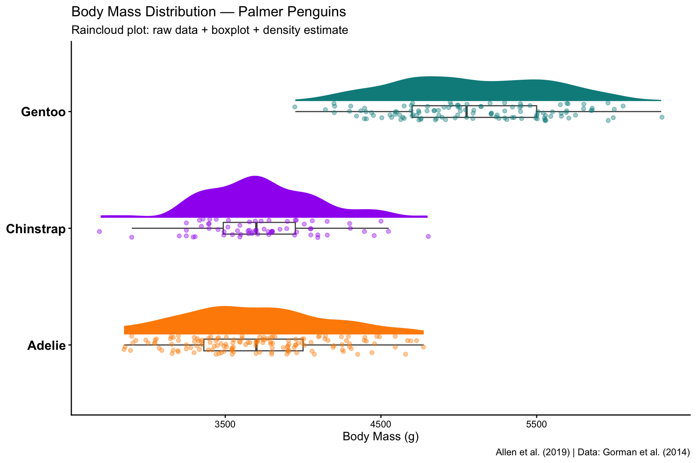
Summary
In this page, you have learned:
-
How base R graphics (
graphicspackage) work for quick exploratory plots — histograms, scatter plots, box plots, bar plots, and density curves. -
Why
ggplot2improves on base R through a principled grammar of graphics. - How to build a ggplot2 figure layer by layer, demonstrating that every added line contributes exactly one visual feature.
-
How to use the most common
geometries (
geom_point,geom_line,geom_histogram,geom_density,geom_boxplot,geom_violin,geom_bar,geom_smooth). -
How to use faceting (
facet_wrap,facet_grid) to create small-multiple figures. - How to control scales, themes, and annotations.
-
How to combine multiple plots with
patchwork. -
How to save figures with
ggsave(). -
How to construct raincloud plots with
ggdist.
References
- Allen, M. et al. (2019). Raincloud plots. Wellcome Open Research, 4, 63.
- Gorman, K.B., Williams, T.D. & Fraser, W.R. (2014). PLOS ONE, 9(3), e90081.
- Horst, A.M., Hill, A.P. & Gorman, K.B. (2020). palmerpenguins. https://doi.org/10.5281/zenodo.3960218
- Kay, M. (2024). ggdist: Visualizations of Distributions and Uncertainty. https://mjskay.github.io/ggdist/
- Pedersen, T.L. (2024). patchwork: The Composer of Plots. https://patchwork.data-imaginist.com
- Tufte, E.R. (1983). The Visual Display of Quantitative Information. Graphics Press.
- Tukey, J.W. (1977). Exploratory Data Analysis. Addison-Wesley.
- Wickham, H. (2010). A layered grammar of graphics. Journal of Computational and Graphical Statistics, 19(1), 3–28.
- Wickham, H. (2016). ggplot2: Elegant Graphics for Data Analysis (2nd ed.). Springer.
- Wilkinson, L. (2005). The Grammar of Graphics (2nd ed.). Springer.
You’ve reached the end of this notebook.
Return to all notebooks